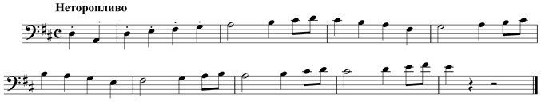
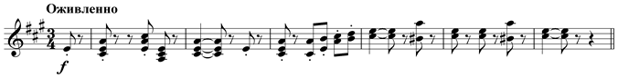
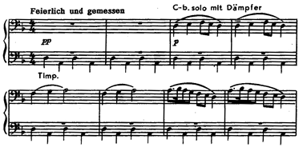
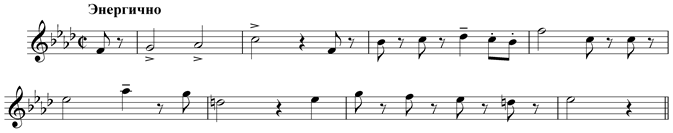

Симфония № 1 Малера, D–dur
D–dur, 1888
В отличие от многих последующих симфоний Малера она чисто инструментальна, хотя композитор использует в ней материал нескольких своих песен из цикла «Песни странствующего подмастерья».
Симфония не имеет отчетливо сформулированной программы (Малер снял первоначальное название «Титан», связанное с романом Жан–Поля), хотя композитор пояснил ее идею в одном из писем. Главный конфликт симфонии – разлад героя-романтика с житейской пошлостью и лицемерием.
4-х частный цикл симфонии сюжетно разделяется на 2 раздела. В первом (части I и II), названном «В дни юности», отношения «героя» с действительностью еще не конфликтны, здесь раскрываются картины природы и народного быта. Второй раздел, под названием «Человеческая комедия» (III и IV части), посвящен осуждению и преодолению зла и фальши, которые внезапно открываются перед человеком. И лишь в результате долгой, мучительной борьбы он вновь обретает утраченную Гармонию.
Симфонию открывает пейзаж – картина пробуждающейся природы в медленном вступлении. Словно из предрассветной тишины возникают фанфары охотничьего рога (кларнеты), голоса птиц (точная имитация клича кукушки у кларнета–solo), неясный нарастающий гул. Подобно бетховенской «Пасторальной симфонии», Малер показывает становление человека в тесном общении с природой.
Во вступлении содержатся интонационные «зерна» важнейших образов всей симфонии: начальный нисходящий квартовый ход у деревянных духовых будет играть роль «лейтмотива природы»; ч.4 станет интонационной основой Г.П. I части, темы лендлера во II части, basso ostinato в Траурном марше, главной партии финала.
1 часть
Вся I часть (свободно трактованное сонатное allegro, D-dur) отличается шубертовской радостью движения, почти не нарушаемым душевным покоем. Материал довольно краткой экспозиции целиком заимствован из песни «Солнце встало над землей» из цикла «Песни странствующего подмастерья» – пасторальной и наивной, пронизанной ритмом шага.

Из песни родилась и форма экспозиции, основанная на принципе вариантной повторности (шубертовская традиция). Тема побочной партии представляет собой вариант главной партии в доминантовой тональности (как в симфонии Гайдна №104). Благодаря звучанию шести валторн в унисон на ff она звучит гимнически–восторженно.
Разработка посвящена не столько напряженному развитию основных тем экспозиции, сколько продолжению их многовариантного «показа», прежде всего – темы вступления. Композитор избегает собственно мотивной работы. В то же время, именно в разработке I части зарождается героическая тема будущего финала. В целом разработка намного превышает экспозицию и репризу вместе взятые. Она характеризуется почти непрерывным темповым, динамическим и оркестровым crescendo, вливаясь в репризу.
Реприза «пролетает» буквально вихрем на продолжающемся темповом ускорении. На одном дыхании, весело и громко в основном D-dur «парадом» проходят все темы I части. Завершается же I часть «гимном природе» в коде.
2 часть
II часть (A-dur, сложная 3-х частная форма с трио, как в классических менуэтах и скерцо) – это типичный австрийский лендлер, впитавший опыт гайдновских менуэтов и бетховенских скерцо. «Юноша идет по свету, став уже сильнее, грубее, жизнеспособнее» – говорил об этой части сам Малер. В музыке подчеркнута буйная жизнерадостность и напористость деревенской пляски с ее несколько неуклюжей пластикой. Основная тема, близкая «лесным» фанфарам вступления I части, тоже имеет песенный прототип – песня «Ганс и Грета». Ее исполняет вся деревянная духовая группа оркестра.

Трио (F-dur) оттеняет музыку крайних разделов мягкой, грациозной лиричностью, округлостью движений. Танцевальной здесь сплавлена с песенностью.
3 часть
Самая знаменитая часть симфонии – III-я, пародийный траурный марш. Замысел этой части родился под впечатлением детской лубочной картинки: звери хоронят охотника и проливают притворные, лицемерные слезы. В музыке марша впервые после «Фантастической симфонии» Берлиоза обличение негативных сторон жизни подано через гротеск. Темой марша стала студенческая песенка–канон «Братец Мартин», переведенная в минор и тем самым как бы притворно омраченная.
Поначалу в марше господствует чинная атмосфера похоронного шествия (Малер сохраняет традиционные признаки жанра – 4-дольный размер с четко акцентированной сильной долей, медленный темп, минорный лад. Привычный для марша фон создает размеренно повторяемая литаврами кварта «d – a».

И вдруг неожиданно в эту атмосферу вклинивается знойный танцевальный напев с утрированным «цыганским» надрывом. Эта банальная тема шокировала современников композитора своей вульгарностью (Малера вообще часто упрекали в банальности, безвкусице, забывая, что вульгарно–бытовой тематизм был для него средством обличения мещанства).
Впечатление злой насмешки над самыми сокровенными, святыми чувствами усугубляется некоторыми оркестровыми приемами, в частности, излюбленным малеровским приемом «чужих амплуа». Таково знаменитое solo «засурдиненного» контрабаса, играющего в крайне высоком для него регистре, или подражание деревянным духовым «цыганским» скрипкам. Особенно противоестественно ведут себя трубы с их фальшивой певучестью. Гротескному миру траурного марша противостоит искренность и возвышенность музыки трио, тема которого заимствована из песни «Голубые глазки». Образ трио воспринимается как свет надежды, мелькнувшей во время кошмарного сна.
Реприза марша динамизирована – основная тема поднимается на полтона выше.
4 часть
Финал симфонии (f-moll ––– D-dur, сонатное allegro со вступлением) – это эмоциональная реакция героя на комедию траурного марша. Вступление сразу погружает слушателя в атмосферу отчаяния, безысходности и боли, близкую музыке экспрессионистов. Стихия неистового драматизма, предельной напряженности господствует и в дальнейшем развитии финала.
Тема главной партии, родившаяся в разработке I части, олицетворяет волю и действие. Малер использует для нее мощь почти полного состава оркестра (струнные, гобои, кларнеты, 7 валторн, к которым позже присоединяются трубы и тромбоны). Волевой напор подчеркивается двухдольным метром, маршевым ритмом.

Огромные масштабы главной партии связаны с ее напряженным развитием уже в экспозиции.
Тема побочной партии (Des-dur), близкая возвышенно-пылкой оперной арии, олицетворяет лирические чувства.
Разработка финала является одним из наиболее значительных этапов разрешения конфликта всей симфонии. Позитивное, действенное начало, заложенное в главной партии, вступает в борьбу с противостоящими ей силами (их олицетворяет тема вступления к финалу). В развитие включается «тема природы» (вступление к I части). Она звучит здесь особенно монументально.
В репризе главная тема изложена в виде фугато.
Конечным результатом всего предыдущего развития является синтез главной темы финала и преобразованной «темы природы» в жизнеутверждающей коде. Музыка коды воспринимается как гимн Природе и Человеку. По мысли композитора – лишь в слиянии с природой человек обретает душевную силу.
Записи
- Кирилл Кондрашин, Симфонический оркестр Московской филармонии, Мелодия, 1969